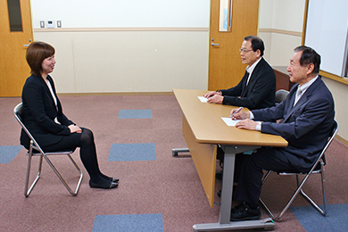

從就業需求層面來看
不只學習商業日語，全套的就職活動支援流程，協助留學生在日成功就業。
大原日本語學院
目的別選修課：就職 就業流程全面支援
外國人留學生想要在日本就業，實不是一件容易的事情，除了語言的門檻之外，還有許多留學生不清楚或即使知道也不明白其用意的細節。
大原日本語學院將「就職」規劃為選修課程，只以有意願在日本就業的留學生為教學對象。學校協助留學生就業，經驗豐富，知道留學生求職所需要的不只有日語的運用能力，求才的企業對留學生的期待還包含了熟稔日本職場的商務禮儀、對日本文化的理解度；此外，日本就職有自己一套完整的流程，包含在「就職活動」中必要的自我分析、企業分析、面試指導等，而這些可能會讓外國人留學生暈頭轉向的求職事宜，學校都已經規劃到教學當中，並且安排班級導師跟進就職活動進度，隨時都能夠提供意見與諮詢，以及各種求職所需資訊。

學校法人長沼學校東京日本語學校
ビジネス日本語コース 協助留學生在日成功就業
近年來，想在日本工作、進入日本企業就業的留學生的期望越見上升。東京日本語學校開設了「ビジネス日本語コース」，著手整理出打下商業日語基礎的教育法以及規劃相關課程。
在課程中，將實際就職活動中所需要的know-how都一網打盡，如履歷表的撰寫方法、自傳、期望進入目標企業的動機的撰寫法、陳述時的注意事項，到面試應對事宜、了解日本式的禮節等；且不只教授求職階段的各種細節，包含一進入日本職場之後馬上就會用到的技能，也囊括進了教學內容當中，如e-mail的書寫方法、電話中的應對進退、敬語的使用與表現（包含在公司內應對同事，以及對外與客戶等的應對方式）、會議上陳述個人意見的方式等，大獲畢業生們「幫助甚大」的好評價。課程之外，學校有專責單位「就職支援室」隨時接受來自留學生們的諮詢，並開拓接收日本海內外的求才資訊，提供給學生最即時的資訊；並邀請企業到校舉辦「就職博覽會」，讓學生有與企業人事主管面對面接觸的機會。
